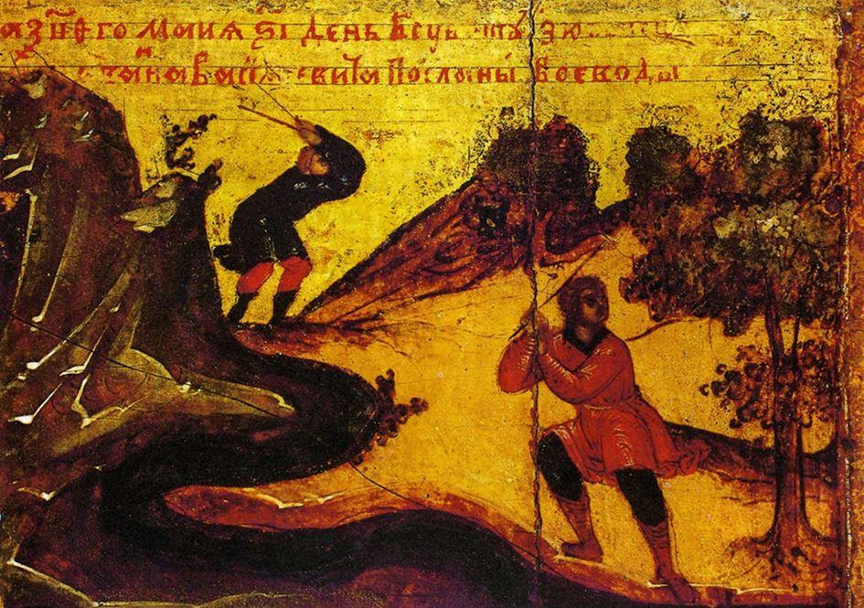

Ivan IIILa conquête du khanat tatar de Kazan fut sans doute la plus grande réussite militaire du tsar Ivan IV le Terrible. À sa naissance, en 1530, le conflit opposant Tatars et Russes était déjà séculaire : les premiers étaient en quelque sorte les héritiers des Mongols de la Horde d’Or, dont ils s’étaient séparés et avaient pris la place sur le bassin de la moyenne vallée de la Volga ; dès la création de leur Khanat, vers 1438, ils avaient régulièrement lancé des raids vers les principautés russes pour y faire du butin et des prisonniers alimentant leurs marchés aux esclaves. En 1487, le grand-duc Ivan III, grand-père d’Ivan le Terrible, les avait vaincus une première fois et installé une dynastie favorable à leur tête.
En 1521 cependant, cette dernière fut renversée et le nouveau khan, Safa Giray, relança les hostilités avec vigueur : les raids tatars devinrent alors quasi-continuels et certains parvinrent même aux portes de Moscou ; des milliers d’hommes et de femmes furent capturés puis réduits en servitude, tandis que d’innombrables pillages et massacres eurent lieu ici ou là. La réaction russe, entre 1524 et 1530, se termina par un succès, mais ses effets furent de courte durée et les expéditions tatares reprirent de plus belle.
L’État moscovite était alors en pleine expansion et ne pouvait tolérer cette menace permanente sur ses marges orientales. D’autre part, le khanat contrôlait le cours de la Volga et s’en emparer permettrait au commerce russe de largement développer ses débouchés commerciaux. Quelques mois après son avènement comme tsar de toutes les Russies, survenu en janvier 1547, le tout jeune Ivan IV – il n’avait que 17 ans – lança une grande opération contre Kazan, essayant de profiter des dissensions politiques internes qui y opposaient les factions pro et anti-russes. Partie de Moscou à la fin du mois de décembre, son armée s’engagea sur la Volga gelée au niveau de Nijni-Novgorod, mais l’hiver étant particulièrement doux cette année-là, la glace céda sous le poids de l’artillerie après une quinzaine de kilomètres de trajet. Le reste des troupes continua néanmoins sa marche en avant et parvint à atteindre la ville où quelques combats s’engagèrent contre les Kazanais avant que ceux-ci ne se retranchent derrière leur enceinte pour attendre le départ de leur ennemi : ils avaient compris que, sans artillerie, ce dernier ne représentait pas une menace sérieuse et ce d’autant plus qu’il n’avait pas les moyens de tenir un long siège. De fait, les Russes le levèrent au bout de sept jours seulement, ne pouvant poursuivre leur action faute des vivres en suffisance. Bien décidé à en finir, Ivan le Terrible renouvela sa tentative deux ans plus tard, toujours en essayant de profiter des troubles opposant les factions pro et anti-russes, qui cette fois s’étaient déclenchés suite à la mort du khan Safa Giray : le 24 novembre 1549, il quitta Moscou et rejoignit son armée qui se rassemblait à Nijni-Novgorod ; faisant à nouveau leur chemin par la Volga gelée, les Russes atteignirent Kazan le 14 février et investirent immédiatement la ville tout en lançant des raids de destruction dans ses alentours. Malheureusement pour eux, un épisode de dégel et de pluies intervint et ils perdirent une grande partie de leurs vivres dans les inondations ; ne pouvant se réapprovisionner rapidement, ils furent obligés de battre en retraite après onze jours de siège seulement.
Vue générale de Sviajk – gravure du XVIIIe siècle
La distance séparant Kazan des bases russes les plus orientales était la cause des problèmes de ravitaillement ayant entraîné l’échec des deux premières tentatives d’Ivan le Terrible : à vol d’oiseau, la capitale tatare se trouvait à plus de 300 kilomètres de la ville Nijni-Novgorod et à 200 de Vasilsoursk, forteresse la plus avancée vers l’Est et après laquelle on entrait sur les territoires des Tchouvaches et des Maris, sur lesquels la plus grande partie des hostilités s’étaient déroulées. Ces peuples étaient initialement soumis au Khanat de Kazan, mais la présence de plus en plus marquée des armées russes sur leurs terres avait amené une partie de leurs noblesses à faire défection en faveur de Moscou. Malgré cela, la région devait toujours être considérée comme globalement hostile.
Carte de l’expansion russe – 1300 – 1796
Portrait d’Ivan IV le Terrible – vers 1600Ivan IV comprit la nécessité de disposer d’une base opérationnelle non seulement proche de son objectif, mais aussi assez grande pour abriter les effectifs et la logistique indispensables à une action d’envergure. En retraitant après sa tentative de 1550, il repéra la colline de Kara-Kermen, située au confluent de la rivière Sviaga et de la Volga, à une trentaine de kilomètres à l’ouest de Kazan mais en territoire tchouvache ; elle était entourée d’eau sur trois côtés avec, en plus du cours de la Sviaga, celui de son affluent la Shchouka ainsi que le lac Shchouchie ; son sommet, sorte de plateau ovale orienté sud-ouest / nord-est, avait des dimensions respectables avec plus de 1000 mètres de longueur pour 600 dans sa plus grande largeur. Toutefois, même si ses versants étaient assez hauts et abrupts, que les étendues d’eau ainsi que les marécages qui l’entouraient étaient particulièrement larges et qu’elle était directement reliée au territoire russe par la Volga, il était totalement illusoire de vouloir y construire une forteresse de manière classique. En effet, un tel chantier aurait duré des mois, et nécessité une main-d’œuvre considérable, tandis que les troupes indispensables pour le protéger contre les Tatars tout proches auraient dû être particulièrement nombreuses : son approvisionnement, tout comme le ravitaillement des dizaines de milliers d’ouvriers et de soldats, aurait constitué un casse-tête logistique insoluble. Installer une forteresse sur Kara-Kermen n’était faisable que si le début des travaux surprenait totalement les Tatars et si leur durée n’excédait pas quelques courtes semaines afin de ne pas leur laisser le temps de réagir, tout en limitant au maximum les besoins en subsistances. Autant dire que la chose devait apparaître impossible à réaliser.
Ivan IV était cependant un jeune homme connu pour sa grande intelligence, sa culture, son esprit visionnaire et son excellente mémoire. Surtout, il était conscient des immenses capacités de son État ; le plan qu’il élabora - ou qu’il valida s’il lui fut soufflé par l’un de ses conseillers - pour transformer la colline de Kara-Kermen en forteresse inexpugnable suivant les impératifs tactiques et logistiques qu’il s’était fixé le montre bien : les fortifications seraient construites en bois très loin de Kazan afin de ne pas éveiller les soupçons des Tatars ; une fois prêts, les ouvrages seraient totalement démontés, leurs éléments numérotés et chargés sur des barges qui descendraient ensuite la Volga jusqu’au confluent de la Sviaga.
Là, le remontage de la forteresse « en kit » se ferait en un temps record. Ce projet était d’une audace inédite.

La construction de Sviajsk – Icône du XVIIème siècle
Ivan IV confia la conception et la réalisation du projet à l’un de ses grands officiers, Ivan Vyrodkov, qui disposait d’importantes compétences en ingénierie militaire. Il fut décidé d’installer le site de construction sur la haute Volga, à proximité d’Ouglitch, en amont de Iaroslav et à 1000 km environ de Kazan par le fleuve (700 à vol d’oiseau) : en plein territoire russe, les travaux se feraient en sécurité tandis qu’il serait aisé de maintenir le secret de l’opération. Bucherons et charpentiers travaillèrent tout l’hiver 1550-1551 : avec les milliers d’arbres abattus, on construisit des portions d’enceinte, des portes fortifiées, des tours, des maisons et même des églises. Au début du printemps, tout était prêt : les bâtiments furent alors démontés, leurs pièces constitutives numérotées et repérées avant d’être chargées sur des barges.
L’opération fut lancée en avril, dès que la Volga fut libérée de ses glaces hivernales. Le choix de cette période, s’il correspondait à une nécessité étant donné que le convoi fluvial devait pouvoir naviguer rapidement jusqu’à son objectif, participa aussi à l’effet de surprise : jusqu’à présent, Ivan le Terrible avait toujours mené ses offensives au cœur de l’hiver afin de pouvoir utiliser la Volga gelée comme une route directe et plus rapide vers Kazan.
Pendant que les barges et leur précieuse cargaison descendaient le fleuve, une armée de protection et de couverture fut déployée pour aller tenir le confluent de la Sviaga et les passages en direction de Kazan tout en harcelant les défenses de la ville, ainsi que ses voies de communication. Les navires touchèrent Kara-Kermen le 24 mai 1551 et les travaux commencèrent le lendemain. Les effectifs amenés sur place étaient à la hauteur de l’objectif : 75 000 ouvriers s’attachèrent à leur besogne en commençant par déboiser et niveler le terrain. Pour les Tatars, la surprise fut totale et les opérations qu’ils montèrent pour essayer de contrer l’entreprise furent toutes repoussées.
L’arrivée des barges transportant la forteresse démontée et le début de la construction – Chronique du XVIème siècle
Les hommes travaillèrent jour et nuit. Au remontage des éléments préfabriqués s’ajoutèrent la réalisation d’environ la moitié des pièces charpentées nécessaires à l’achèvement des bâtiments, ainsi que le remplissage des remparts de rondins avec de la terre, suivant la classique technique russe de fortification. On estime que 20 000 mètres cubes de bois furent utilisés et 30 000 de terre remblayés. Au bout de 28 jours seulement, la forteresse (en russe kremlin, кремль) fut opérationnelle : son enceinte se développait sur 2600 mètres, était flanquée de dix-huit tours à 2 ou 3 niveaux, dont sept totalement terminées, et de six portes fortifiées ; à l’intérieur, on trouvait des arsenaux, des magasins à munitions et à vivres, des casernes, des maisons ainsi que deux églises, le tout relié par des axes rectilignes se croisant à angles droits.
La construction de Sviajsk – Miniature du XVIIème siècle
Les témoins de l’époque affirment que cet ensemble était plus imposant que les kremlins de Moscou, de Novgorod ou de Pskov. En l’honneur du Tsar on la nomma Ivangorod (la ville d’Ivan), qui devint ensuite, en référence à la rivière Sviaga, Novii-Gorod Sviajski (la Nouvelle Ville de la Sviaga), nom simplifié plus tard en Sviajsk (Свияжск).
Le siège de Kazan en 1552 par Petrov Malakov
Reconstitution du visage d’Ivan IV d’après son crane par l’anthropologue Mickael GerasimovLa réussite de l’entreprise eut des effets immédiats : les peuples tchouvaches (sur le territoire desquels la forteresse était implantée) et maris, impressionnés et constatant surtout l’incapacité des Tatars à les protéger, firent leur soumission ; à Kazan même, des troubles politiques éclatèrent dès juin-juillet, le Khan fut renversé et son rival tenta de négocier la paix jusqu’en mars suivant, mais ce fut sans succès.
Pendant ce temps, Ivan IV prépara sa prochaine campagne, notamment en envoyant quelques troupes et surtout des approvisionnements à Sviajsk par la Volga ; il avait prévu de quoi alimenter plusieurs mois de campagne.
Le 16 juin 1552, il quitta Moscou à la tête du gros de son armée et, après avoir battu les Tatars de Crimée, alliés de Kazan qui essayaient de lui barrer la route, parvint à sa nouvelle forteresse cinq semaines plus tard. Là, il put attendre en sécurité les navires dont il avait besoin et préparer le siège de la capitale tatare dans les meilleures conditions.
Les textes indiquent que l’armée russe, forte de 150 000 hommes, disposait d’une importante artillerie de 150 canons de gros et moyens calibres, ce qui lui donnait un rapport de force nettement favorable, l’effectif des défenseurs de Kazan étant estimé à 60 000 combattants. Les opérations débutèrent le 15 août, lorsque les premières troupes russes embarquèrent et commencèrent à descendre la Volga en direction de la ville qui, 8 jours plus tard, fut totalement investie ; les ingénieurs russes commencèrent alors à édifier de puissants ouvrages de siège, dont d’impressionnantes tours mobiles. Les combats qui s’engagèrent ensuite furent longs et difficiles ; la défense fut acharnée, les assiégés multipliant les sorties, les assaillants menant assaut sur assaut appuyés par de constants et violents tirs d’artillerie ; ils firent aussi sauter plusieurs mines sous les remparts, mais ce n’est que le 2 octobre que l’une d’entre elle fut décisive : les Russes purent s’engouffrer dans la brèche ainsi créée puis, de là, conquérir la ville de haute lutte jusqu’à la mosquée du palais du Khan où les deniers défenseurs, menés par un imam, moururent les armes à la main dans la soirée.
L’artillerie russe en position devant Kazan
La victoire d’Ivan le Terrible à Kazan eut un retentissement considérable : le khanat fut annexé à la Russie, tandis que celle-ci, en plus de nouveaux débouchés commerciaux, disposa désormais d’une nouvelle et immense base pour continuer sa marche vers l’Est. Ce fait d’armes ne fut possible que parce que le Tsar put utiliser l’exceptionnelle capacité opérationnelle de la forteresse de Sviajsk, y rassemblant à l’abri de l’ennemi plusieurs milliers d’hommes, 150 canons, des dizaines de barges et un important matériel du génie avec tous les approvisionnements nécessaires pour une opération de longue durée. Si l’on considère les moyens mis en œuvre, ainsi que les délais avec lesquels la construction de cette base opérationnelle avancée fut planifiée, préparée et exécutée, on peut sans doute classer cette opération comme la plus audacieuse des grandes entreprises militaires réussies au XVIe siècle.
Après la victoire de Kazan, Sviajsk est devenue une petite ville provinciale et a progressivement perdu son aspect militaire. Il ne reste des structures construites au printemps 1551 que l’église de la Sainte-Trinité, bien que fortement remaniée, ainsi que le tracé en damier du parcellaire.
Plan de Sviajsk en 1829
Pour le reste, des fouilles archéologiques ont permis de mettre au jour quelques fondations du mur d’enceinte en rondins, ainsi que celles d’habitations visibles au musée archéologique local.
L’église de la Sainte-Trinité
Par ailleurs, l’histoire de la localité après 1552 est relativement riche et, bien que n’étant plus qu’un village comptant à peine 250 habitants, on y trouve plusieurs monuments historiques valant le détour. Enfin, après le remplissage de l’immense réservoir de Kouïbychev créé par le barrage de Jigouli-Kouïbychev, en 1957, la colline de Sviajsk est devenue une île, aujourd’hui magnifique havre de paix semblant flotter sur l’eau.
Vue actuelle de Sviajsk
Je remercie le père Basile Pasquiet, archimandrite du monastère de la Sainte-Trinité de Tchéboksary, d’avoir éveillé mon intérêt pour l’épopée de Sviajsk.


Partager cette page